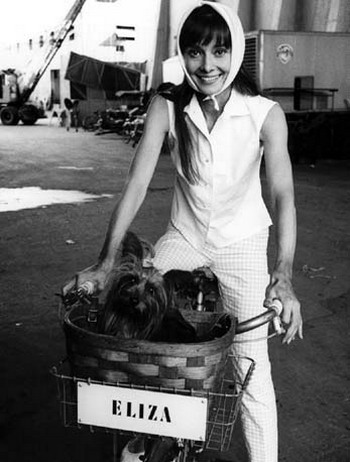

Idealna lepota?
Čitam "Zajedno, to je sve", Ane Gavalde, lepa knjiga sa upečatljivim likovima i tečnim dijalozima. Na jednom mestu, ta jedna devojka, iscrpljena i kratko ošišana zbog ponosa i spleta okolnosi, i jedan muškarac, spleten i intelektualan, provode vreme tako što on priča i čita istorijske zanimljivosti i zgode. Na jednom mestu čita odlomak koji opisuje lepotu Dijane od Poatijea:
"...ona je poslužila da se uspostave kanoni lepote, kojima su sve žene, tokom čitavih sto godina, ludački nastojale da se približe.
Tri bele stvari: koža, zubi, dlanovi
Tri crne: oči, obrve, trepavice
Tri crvene: usne, obrazi, nokti.
Tri dugačke: telo, kosa, ruke
Tri kratke: zubi, uši, stopala
tri uske: usta, struk, ris stopala
Tri krupne: ruke, butine, zadnjica
Tri male: bradavice, nos, glava."
Zanimljivo. Mislim, zanimljivo mi je to povezivanje po brojčanom modelu, toliko tih trijada. Trebalo je to i uočiti, tu zakonitost.
A kad smo već kod ideala lepote, evo i pogleda na ono što je bilo pre i posle.
Klasični deal lepote Grčka i Rim, to jest:
Ženska lepota, prema tom modelu, sastojala se u: "small breasts (sometimes extremely so, as in the case of the Esquiline Venus), wide breast separation, shapely though not overly large buttocks (as particularly in the Aphrodite Kallipygos) and relatively wide hips (as in the Aphrodite of Cnidus).
Fast forward, u današnjicu.
Međunarodni panel eksperata (urednika, fotografa, ljudi iz modnih agenicja, šminkera itd.) progsalio je 2004. godine Odri Hepbern najlepšom ženom svih vremena. Žiri je o njoj rekao: "She has a rare charm and inner beauty that radiates when she smiles. Her skin looks fresh in all her films and her personality really shines through as someone warm and lively." U obrazloženju liste navode se raznoliki kriterijumi: "The women were chosen for their "embodiment of natural beauty, healthy living, beautiful on the inside and out, with great skin and a natural glow to their personality, as well as their complexion". Ostalih 99 sa liste.
***
A onda još jedan brzi move, do nas, ovde. Subota uveče, neka emisija o stilu na Studiju B (ako se ne varam ta televizija pripada Gradu Beogradu, a u tom slučaju se ona finansira plaćanjima građanki i građana Beogada), elem, ta emisija, u jednom kadru voditeljka obavešava da je ovo prvi i poslednji put da je vidimo u animal printu, to je samo zato što se priča o 80im, wow, baš dragocena informacija. U sledećem, voditeljka prilegla na neku sofu, tu je i mini suknja, i čarape sa krupnim dezenom, čak i muf. Komentar je nemoguće smisliti.
Sutradan, kod Sanje Marinković u emisiji, pita ona goste, svakog po redu, ko su im najlepše poslnice u skupštini, za odgovore se svi snalaze kako znaju, suština je, kako reče Čanak, ili već neko, hajde da lepo zanemarimo što nismo konstituiali ni Vladu ni Skupšinu ni odbore, nego da lepo organizujemo izbore za mis parlamenta, možda posle da je pošaljemo i na neko regionalno akmičenje, a i šire...
I tako, lepo je sve počelo sa Francuskom, istorijom i književnošću, a evo gde, opet, završih...
 RSS feed
RSS feed
 sadržaji se objavljuju pod
sadržaji se objavljuju pod
Odri je najbolja, tačno. A onda posle nje dođe Grejs Keli, a blizu je i Nicol Kidman